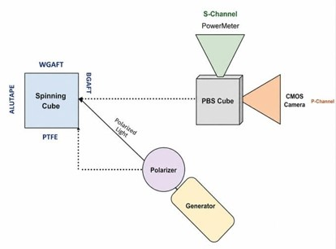
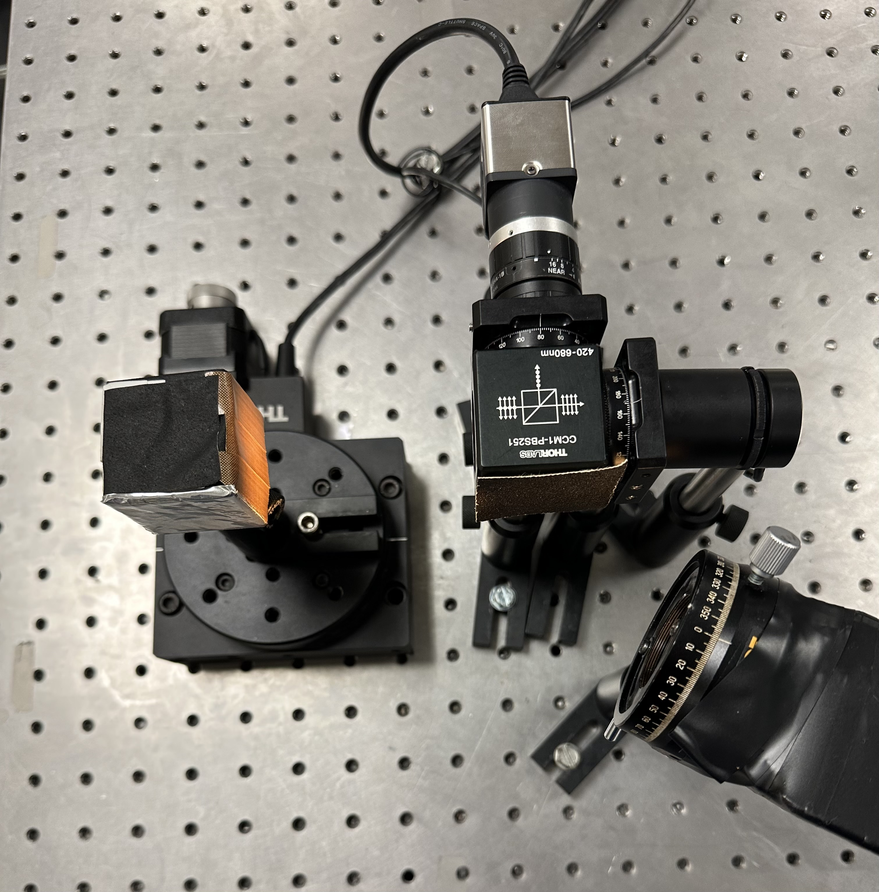
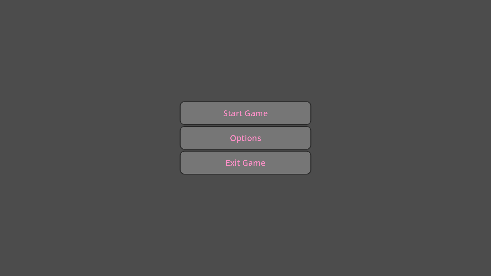
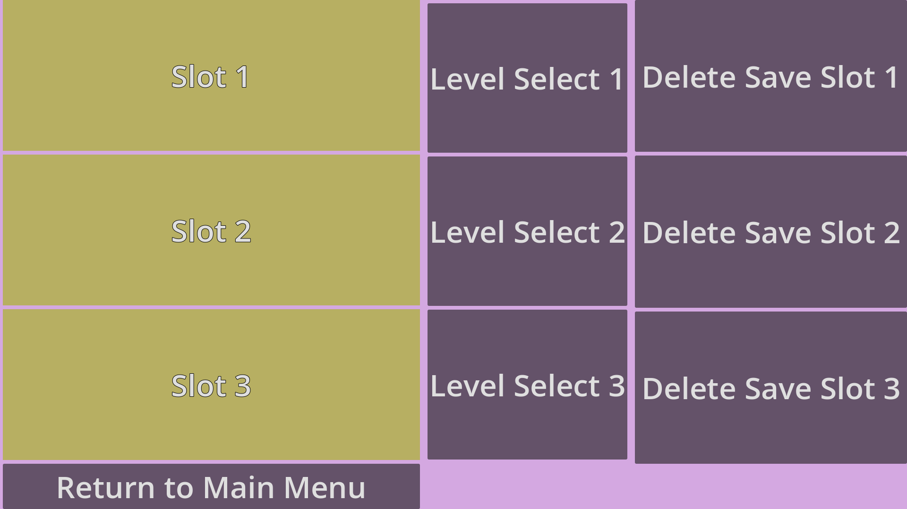
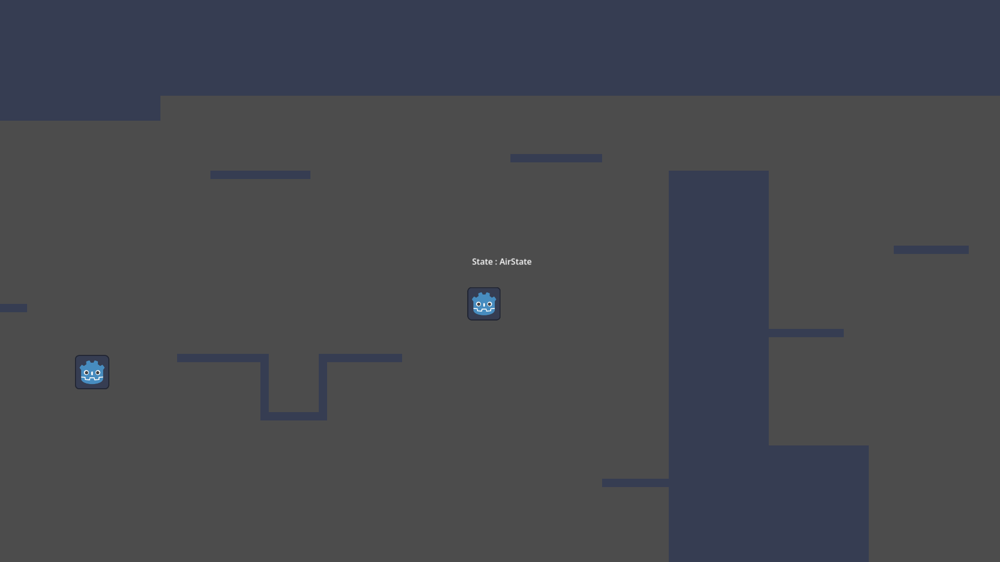
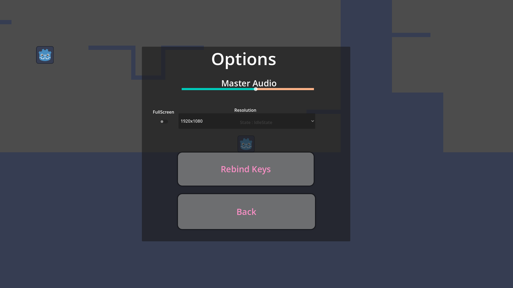

Home
Computer Engineer | Former IT Analyst | Rising Cybersecurity Analyst
About
I am a computer engineering graduate with a master's in computer engineering. I have an interest in cybersecurity and have passed the comptia security + exam on July 14th, 2026.
Certified Google AI Professional, ISC2 Certified in Cybersecurity, CompTIA Security +
Proficient in C++, Java, C, Pytho, GDScript programming languages
Interested in cybersecurity practices, coding, gaming, game development
Contact
Email : nicolashelou11@gmail.com
GitHub LinkedInProjects
Neuromorphic Systems for Autonomous Space Cybersecurity
Description
Light wave modulation for a polarimetric dynamic vision sensor(pDVS) was studied to combat spoofing in space object detection
Four different materials were taped to a motorized spinning cube with different light wave forms and frequencies shining on the cube
Results found that triangular waveforms were most efficient in spoofing, tricking the pDVS into mistaking one object for another
Polarizers placed in front of the pDVS at specific angles proved to be effective in reducing spoofing likelihood, giving consistent light intensity readings per each material independent of the waveform


Skills Used
Research, Machine Learning, Neuromorphic Neural Networks
DDoS Cybersecurity Research
Studied how distributed denial of service (DDoS) attacks are performed
Factors such as zombies, botnets, amplification attacks and more were studied and mitigation techniques were evaluated
The role of honeynets and honeypots in redirecting unwanted network traffic as well as the implmentation of firewall rules was tested
Skills Used
Research, Cybersecurity, Network Defense, Firewalls, Honeypots, DDoS Mitigation
Godot Game Development
Small, indie development projects using the Godot game engine to develop a short platformer
Finite state machines utilized for player characters as well as enemy obstacles were utilized
Working save, pause, controls, configuration and player/enemy interactions




Skills Used
GDScript, Game Development, Programming, Finite State Machines